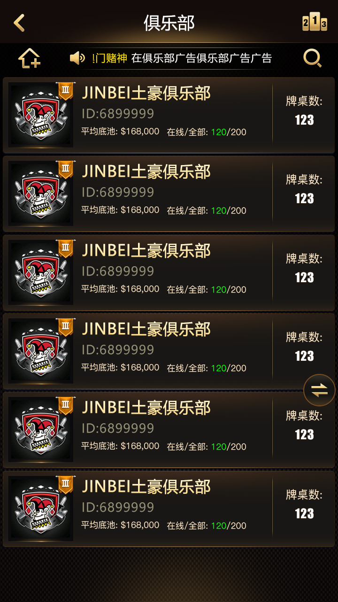

Poker lobby
Discovery for tables, game modes, clubs and tournaments.
The lobby connects players to cash rooms, clubs, private friend games and tournament entrances, while SNG and MTT provide structured competition.

Product and source overview for a poker lobby, clubs, private friend tables, club leagues, SNG and MTT tournaments, including real product screenshots and C++ modules.
Discovery for tables, game modes, clubs and tournaments.
Persistent player communities and multi-club organizational scenarios.
Sit-and-go and multi-table tournament flows from registration to active tables.
These images are existing product assets from this repository, not mockups.


| Login and protocols | LoginProto.tars, LoginServant.tars, LoginServantImp.cpp, LoginServer.cpp |
|---|---|
| Game state | gamestation.cpp, Processor.cpp |
| Player flow | sitdown.cpp, standup.cpp, userinfo.cpp, getuserinfo.cpp |
| Order service | OrderServant.tars, OrderServer.cpp |
| Project assets | makefile, Proto/, u3d/, Screenshots/, docs/ |
The public repository mainly exposes server code, protocol files and demo assets. Confirm the client, database, admin console and commercial deployment scope against the actual files and license.
Classic Holdem, AOF and 6+ Short Deck cover standard and fast tables.
SNG and MTT cover sit-and-go and multi-table tournament flows.
Cowboy Holdem, Omaha and OFC Pineapple provide additional product modes.